2008 · Principale · Nation
Nation · Flight 003
Germany
Opere 17


La serata 14 foto

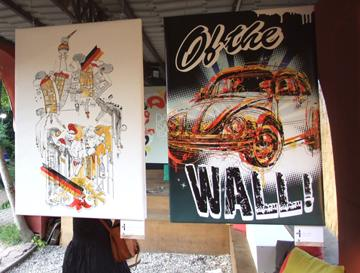

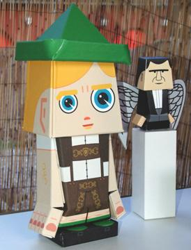

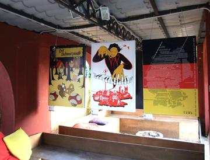

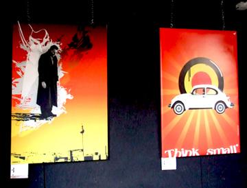

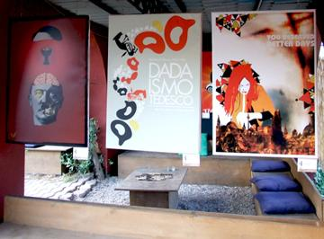

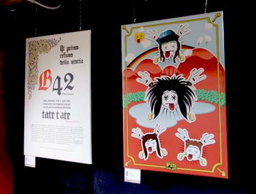

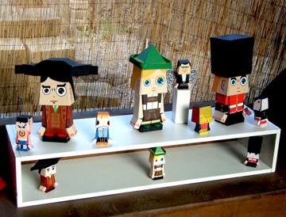

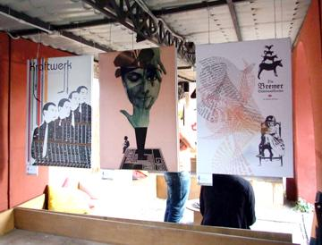

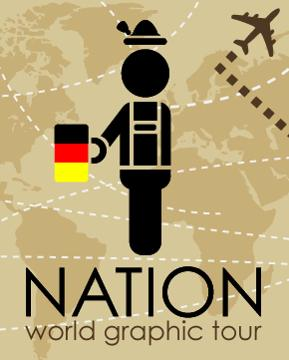

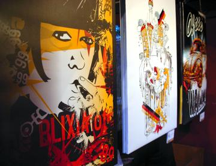

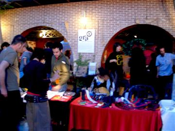

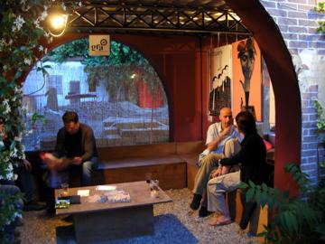

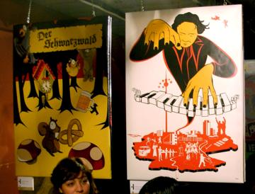

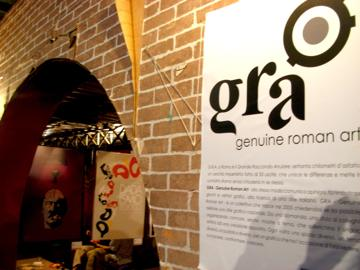
Artisti 16
Agostino SperandeoAlessia MastrifortiArtevettorialeChiara TomassiniEugen LaitenbergerEva HillreinerGinevra Virgili · gin°Lady FlowersLiza Marie CalestiniMarco CaràMiriam Tognella · Disorder DesignRoberta Rizzi · RoRiSparlaSpumoneStefano Longo · thisisstupidVinicio Trugli
GRA — Genuine Roman Art · RomaOpere © i rispettivi autori